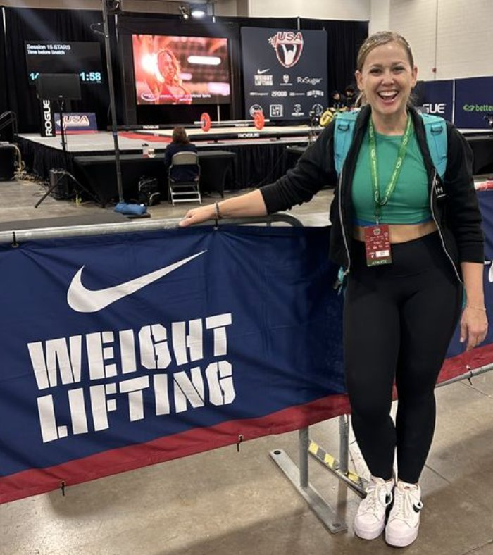
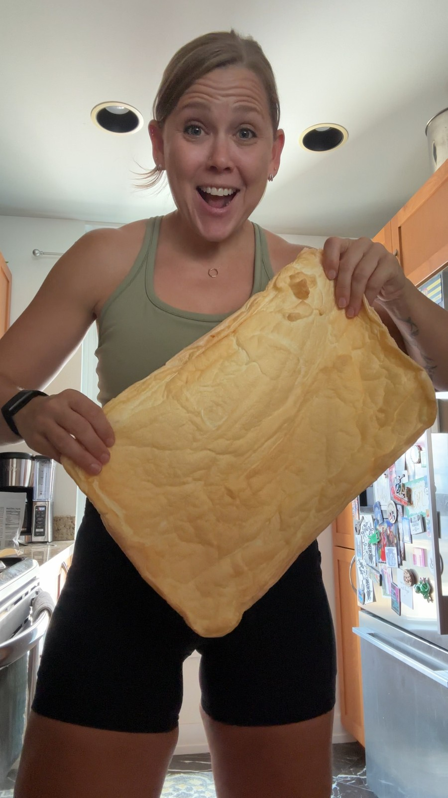

Meet your coach
Hi, I'm Jess
Former corporate director turned Certified Nutrition Coach. My passions for lifting heavy, exploring the world, and enjoying amazing food showed me that nutrition should enhance your life, not restrict it.

NASM Certified Nutrition Coach
Macro coaching · Performance fueling · Lifestyle nutrition
My story
For years I chased results the wrong way and couldn't lose fat or gain muscle. I was cutting entire food groups, following meal plans I couldn't maintain, chasing cardio to "get lean", and letting the scale dictate my mood. Nothing changed and nothing stuck; I was frustrated.
At 38, I started lifting consistently, and everything changed. I began working with a Dietitian and a Nutrition Coach who completely transformed how I understood food. I learned to track macros, fuel for performance, and build a relationship with food rooted in curiosity instead of fear. I lost fat and gained muscle. My energy came back. And at 41, I am the strongest I have ever been.
That experience lit a fire in me. I became deeply passionate about strength building, longevity, bone health, and what it actually means to properly fuel your body. After 20 years working in Corporate Retail, coaching teams, building systems, and driving results, I knew exactly how to take that passion and turn it into something that could help other people.
I became a NASM Certified Nutrition Coach because I know what it feels like to start late, feel lost, and not know who to trust. And I know what it feels like on the other side: empowered, confident, and strong.
Get Started →